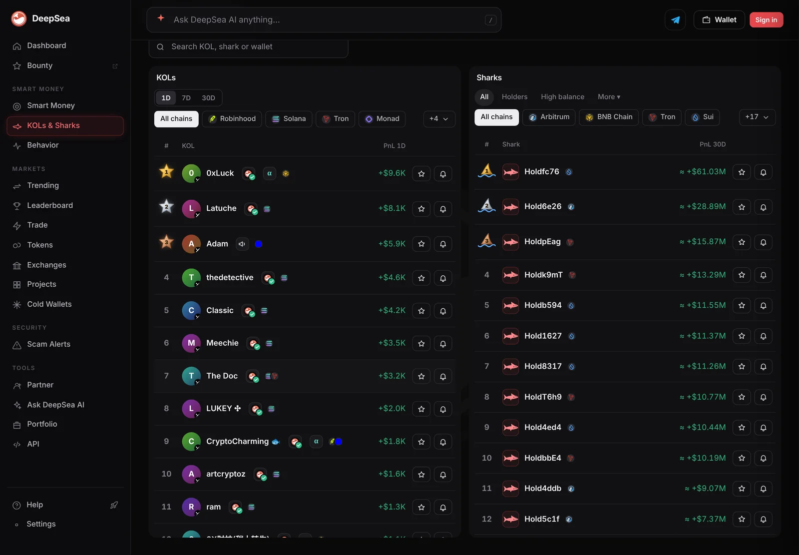
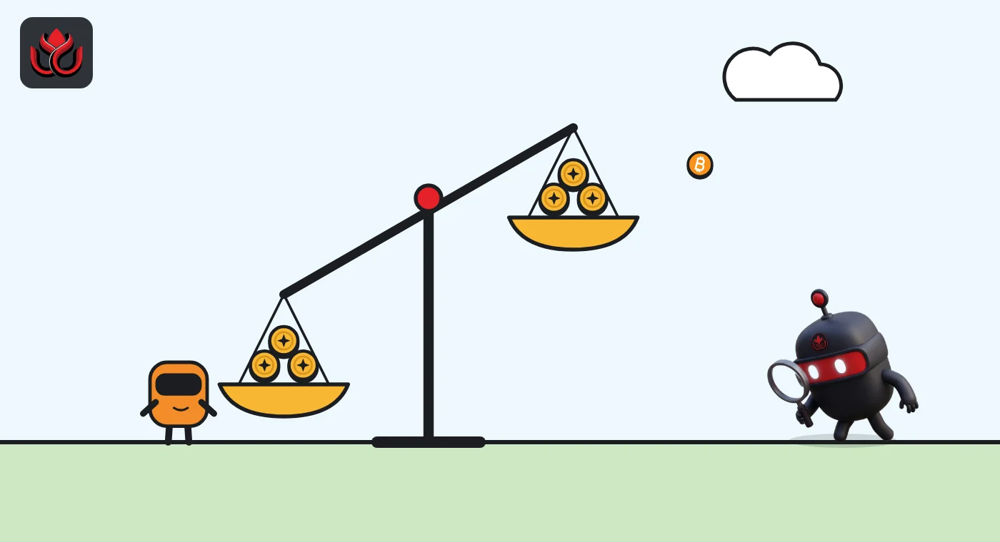

One KOL lost $44,400 on Sunday, wiping out 82% of what 31 winning KOLs made
DeepSea's one-day board lists 58 crypto influencers with a result on November 8. Most made money, but Loopierr's single loss pulled the whole group about $20,900 into the red.
Key points
- DeepSea's one-day KOL board, read at about 6:36 a.m. ET on November 8, 2026, lists 58 influencer wallets with a result: 31 in profit and 27 at a loss.
- The 31 winners made about $54,300 combined, led by 0xLuck at +$9,600. The 27 losers gave back about $75,200.
- One KOL, Loopierr, accounts for $44,400 of the losses, about 59% of the total and 82% of everything the winners made.
 What DeepSea's data shows
What DeepSea's data shows
DeepSea tracks the public on-chain wallets of crypto influencers, often called KOLs (key opinion leaders). Its KOLs board, set to one day (1D), ranked 58 KOLs with a profit or loss figure at about 6:36 a.m. ET on November 8, 2026. Many more names on the list showed no figure for the day.
Adding up the figures as DeepSea displays them (rounded to the nearest $100 above $1,000): 31 winners made about $54,300 and 27 losers lost about $75,200. Net, the group was down about $20,900.
The top three were 0xLuck (+$9,600), Latuche (+$8,100) and Adam (+$5,900). At the bottom, Loopierr was minus $44,400. The next worst, Ed_x區塊日記, was minus $7,100, and OGAntD minus $5,300.

Data: DeepSea (desea.io), checked November 8, 2026, 6:36 a.m. ET.
One loss outweighs everyone else
Without Loopierr, the other 57 KOLs would have been up about $23,500 for the day. With it, the board turns negative. Loopierr's loss alone almost matches the top 10 winners combined (about $44,500).
Most results were small. Of the 31 winners, 17 made less than $1,000, and three made $5 or less. Of the 27 losers, 20 lost less than $1,000.
KOL one-day results, November 8, 2026
US$ thousand
Source: DeepSea KOLs board, 1D, about 6:36 a.m. ET, November 8, 2026.
The market barely moved
The losses did not come from a market swing. CoinGecko showed bitcoin at $75,913 at 6:46 a.m. ET, down 0.05% in 24 hours. Ether was down 0.25% at $2,238, Solana down 0.46% at $89.55 and BNB up 0.55% at $697.59. KOL wallets mostly trade small tokens and memecoins, where single trades can swing far more than the big coins.

Why it matters
A board total can hide how uneven the results are. Here, one wallet decided whether the group made or lost money. DeepSea's figures are realized profit and loss on closed trades in wallets it links to each KOL, so they do not include tokens still held, and they cover only wallets DeepSea has matched to that person.
LC Insight analysis
This section is our reading of the facts above, not a statement of fact.
- We think the spread matters more than the total: most influencers moved a few hundred dollars, while one wallet lost about as much as the top 10 winners made.
- On a quiet Sunday, a $44,400 loss does not track a market move. DeepSea's board does not show which token or trades caused it.
- A one-day board is a snapshot. These results say nothing about what any of these traders will do next.
What's next
- Whether Loopierr's 7-day figure turns negative
- Whether the one-day board stays this flat into Monday's trading
- Which tokens show up most in KOL buys this week
Disclaimer. This article is based on public information and the sources listed below as of the update time shown. It is for information only and is not investment, legal or tax advice. Figures may change as companies and authorities publish new data.